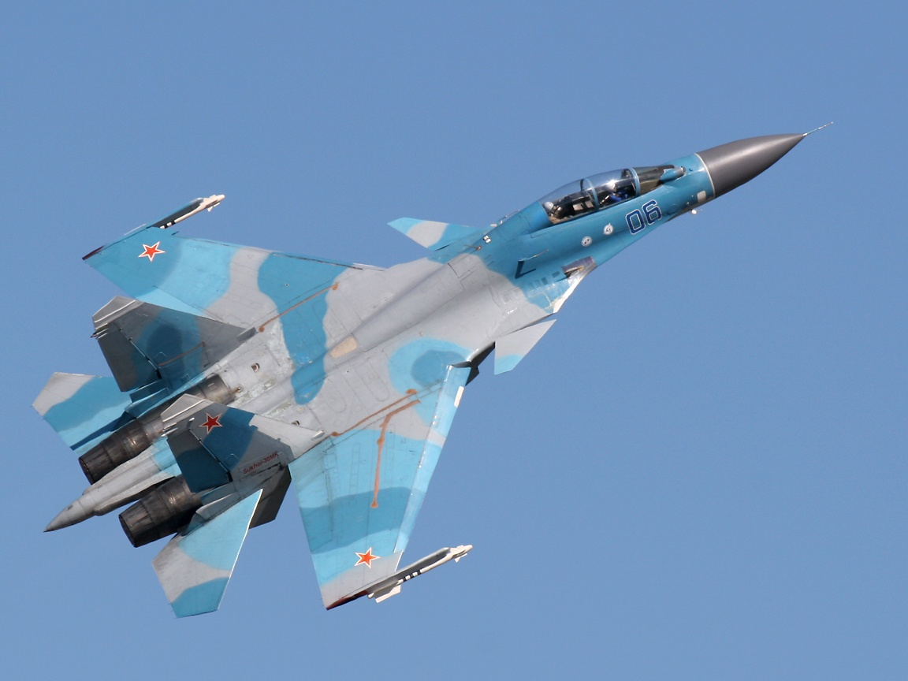

SU-30

O Sukhoi Su-30 é um caça multiuso, bimotor, de dois tripulantes, com característica de supermanobrabilidade desenvolvido pela Sukhoi. Possui capacidade operacional em qualquer condição climática, podendo ser usado tanto em combate ar-ar quanto em missões de interdição aérea.
O Su-30 começou como um projeto interno de desenvolvimento da família Sukhoi Su-27 pela Sukhoi. Seu plano de design e nome foi renovado oficialmente pelo Ministério de Defesa da Rússia em 1996. Da família Flanker, apenas os Su-27, Su-30, Su-34 e Su-35 tiveram pedidos para produção em série pelo Ministério de Defesa. Os outros modelos, como o Su-37 e Su-47, eram protótipos. O Su-30 possui duas versões distintas, fabricadas por organizações concorrentes: KnAAPO e a Irkut, ambas sobre a influência do Grupo Sukhoi.
A KnAAPO produz o Su-30MKK e o Su-30MK2, o qual foi desenvolvido para venda a China e, posteriormente, a Indonésia, Uganda, Venezuela, e Vietnã. Devido ao envolvimento da KnAAPO nos estágios iniciais de desenvolvimento do Su-35, suas versões de Su-30 são basicamente tipos de Su-35 com dois lugares. A China escolheu uma mais antiga, porém mais leve, versão de radar assim como possibilidade de retirar os canards no intuito de aumento de capacidade de carga. O caça possui capacidades de supremacia aérea e ataque ao solo, sendo similar ao F-15E.
proximo